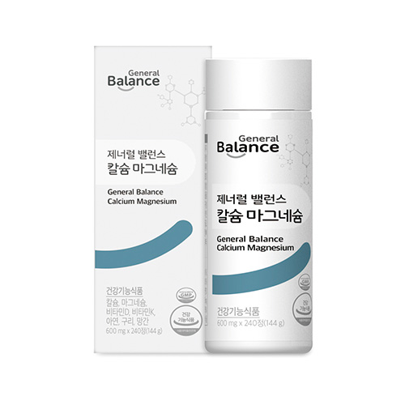

제너럴 밸런스 칼슘마그네슘
7중 복합 기능성 3중 복합 칼슘 마그네슘
- 회원가입 없이 회원가
- 지쿱 본사 정품 직접 발송
- 5만 원 이상 무료배송
제너럴 밸런스 칼슘마그네슘 상세 설명 · 원료와 특징
제너럴 밸런스 칼슘 마그네슘 치아와 뼈 건강을 위한 합리적인 선택 과학적 배합을 통한 뼈 건강 밸런스 제품 제너럴 밸런스 칼슘 마그네슘 핵심 6가지 3중 복합 칼슘 포뮬러 사용 7중 복합 기능성 제너럴 밸런스 칼슘마그네슘 3종 (칼슘, 마그네슘, 비타민D) + 4종 기능성 원료 추가 (비타민K, 아연,구리,망간) 체내 흡수율을 높이기 위한 이상적인 배합비율 지쿱만에 엄선된 부원료 6가지 첨가 첨가물 無첨가
기존 제너럴 밸런스 칼슘마그네슘 보다
함량 추가 업! 기능성 추가!
칼슘마그네슘 함량업 + 4종 기능성 원료 추가!
기능성 원료 함량 up!
리뉴얼 기존 칼슘 마그네슘 비타민D 비타민K 아연 구리 망간 ※1일 영양성분 기준 3중 복합칼슘 포뮬러 해조칼슘 깨끗한 바다에서 얻어낸 해조칼슘 사용 유청칼슘 우유에 원심분리하여 유청(Whey)에서 칼슘성분만을 분리 체내 흡수율이 높은 칼슘 원료 구연산 칼슘 소화 부담이 적고 순하여 체내 소화와 흡수율이 가장 높은 칼슘 원료 ※출처 : 식품의약품 안전처 7중 복합기능성 "7in1, 7가지 기능을 한번에"
1일 섭취량 : 1일 2회 2정(2,400mg) 칼슘 450mg (64%) 뼈와 치아 형성에 필요, 골다공증 발생 위험 감소에 도움을 줌, 신경과 근육 기능 유지에 필요, 정상적인 혈액응고에 필요
마그네슘 225mg (71%) 에너지 이용에 필요, 신경과 근육 기능 유지에 필요
비타민 D 10 ug (100%) 칼슘과 인이 흡수되고 이용되는데 필요, 뼈의 형성과 유지에 필요, 골다공증발생 위험 감소에 도움 비타민 K 70 ug (100%) 정상적인 혈액응고에 필요, 뼈의 구성에 필요
아연 8.5 mg (100%) 정상적인 면역기능에 필요, 정상적인 세포분열에 필요
구리 0.8 mg (100%) 철의 운반과 이용에 필요, 유해산소로부터 세포를 보호하는데 필요
망간 2.25 mg (75%) 뼈 형성에 필요, 에너지 이용에 필요, 유해산소부터 세포를 보호하는데 필요.
체내 흡수율을 높이기 위한 이상적인 배합비율 체내 이용율을 높이기 위한 이상적인 배합 비율!
칼슘 450mg 마그네슘 225mg 칼슘 : 마그네슘 가장 이상적인 2:1 비율로 배합 하여 흡수와 체내 이용에 용이하도록 설계하였습니다.
칼슘의 체내 흡수율을 위한 비타민 D 비타민D는 소장에서 칼슘의 흡수를 증진 시키고, 부갑성선호르몬과 함께 신장에서 칼슘의 재흡수를 증진 시키며, 뼈의 칼슘이 혈액 내로 잘 유입하도록 조절함으로써 혈중칼슘의 농도를 증가시킨다.
*참고 [식품안전나라] 건강기능식품 기능성 평가 가이드’칼슘흡수 촉진에 도움을 줄 수 있음’편 2017 - 금원 식품임 - 정상적인 혈액응고 및 뼈 구성 필요한 정상적인 혈액응고에 필요
혈액은 우리몸 건강을 유지하는데 가장 기본적인 요소 비타민 K는 프로트롬빈(prothrombin)을 생성시켜 정상적인 혈액응고를 돕는다. 혈소판과 칼슘이온 등의 작용으로 트롬빈이 되어 이것이 다시 피브리노겐에 작용하여 피브린을 만들어 혈액 응고가 일어난다.
건강한 핵심은 뼈 건강/뼈의 구성에 필요한 비타민K 흔히 뼈의 건강을 위해서 비타민K까지는 생각하지 못하는 경우가 많다. 간과하기 쉬운 비타민인 비타민K도 체내에서 중요한 역활을 하고 있다는 사실 [출처] 식품의약품안전처 기능성원료, 식품의약품안전처 유해 산소로부터 세포 보호 및 골격 형성 , 에너지 이용에 필요한 유해산소로부터 세포를 보호하는데 필요
에너지 이용에 필요
뼈 형성에 필요
망간은 골격형성은 물론 아미노산, 콜레스테롤, 탄수화물등의 당.지방질 대사에 필수적인 영양성분입니다. 또한 유해산소부터 세포를 보호하는데 필요한 성분으로 알려져 있습니다.
유해산소로부터 세포 포호 및 철에 흡수 이동을 돕는 철의 운반과 이용에 필요
구리는 주로 뼈, 골근, 혈액에 존재하는 미네랄 성분으로 체내에서 효소반응의 촉매로 이용되며 세포의 산화적 손상을 방지해 줍니다. 또한 철분의 흡수와 이동을 돕는 역활을 합니다.
정상적인 면역기능·세포분열에 필요한 아연은 체내 200개 이상이 넘는 효소의 구성성분으로 체내 주요한 생체반응에 관여하는 필수영양성분입니다.
아연은 특히 면역체계와 같이 세포 교체가 빠른 체내의 거의 모든 조직에 존재하는 미량원소이며 DNA, RNA와 같은 핵산의 합성에 관여하는 필수영양성분으로 정상적인 세포분열에 반드시 필요합니다.
1일영양성분 기준 지쿱만에 엄선된 부원료 6가지 첨가 맥주 효모 추출물 대나무수액 추출분말 인삼발효 유단백가수 분해물 홍화씨 추출물분말 상어연골 제너럴 밸런스 칼슘마그네슘 정제의 색상이 변경되었습니다.
1일 600mg 4정 첨가물 無첨가 제품상 무첨가(원료성 제외) 스테아린산 마그네슘 (히드록시프로필메틸셀룰로스) 합성향료 착색료 감미료 이런 분들께 권해드립니다.
뼈 건강 및 골다공증 발생 위험 감소에 도움을 받고자 하시는 분 활력 있는 생활을 원하시는 분 바쁜 생활로 건강관리를 못하시는 분 영양소 섭취가 부족하기 쉬운 현대인 타정(정제) 및 패키지 포인트 아연 , 마그네슘 인삼발효추출물분말 (부원료) 정제에 미세하게 보이는 파란색 반점은 이물질이 아닌 구리, 갈색점은 부원료 인삼발효 추출분말, 하얀색 점은 아연과 마그네슘 원료로 품질에 이상이 없으니 안심하고 섭취하시기 바랍니다.
※ 스테아린산 마그네슘, HPMC를 넣지않아 쉽게 부서질 수 있습니다.
동봉된 스티커 를 필요한 내용을 적어 용기에 붙여 사용하세요.
브랜드 스토리 불규칙한 생활습관을 가진 현대인의 몸속 밸런스를 맞추어 주는 건강한 습관 제너럴 밸런스입니다.
스트레스, 영양불균형, 환경오염 등의 원인으로 흐트러진 현대인의 생활패턴으로부터 건강의 균형을 되찾고 기능성과 안전성이 모두 검증된 제품으로 국내뿐만 아니라 전 세계의 건강을 지향합니다.
건강 정보 한국인에게 가장 부족하기 쉬운 영양소 1위 칼슘 “한국인 10명 중 7명 칼슘 부족” 출처 : 2015 보건복지부 국민건강영양조사 한국인 전 연령대 에서 칼슘 부족 평균 1~2세 3~5세 6~11세 12~18세 19~29세 30~49세 50~64세 65세 이상 출처 : 2016 보건복지부 국민건강영양조사 연령대에 따른 칼슘 흡수율 변화 어린이 성인 노년기 <식품의약품안전처 건가익능식품 기능성 평가 가이드 칼슘흡수 촉진에 도움을 줄 수 있음 2017.12>
30대부터 뼈 밀도 감소 시작 미리미리 뼈를 탄탄히 채울 수있도록 관리 필요
(뼈의 양) 최대 뼈의 양 골절역치 여성 남성 여성의 골다공증 유병률 골감소증 남성의 뼈의 밀도는 20대까지 꾸준하게 증가하는 30세를 기점으로 점차 낮아지기 시작합니다.
[자료: 대한민국내분비학회 / 한국인 2014 골다공증FACT] 골다공증 환자 5년 동안 약 18% 증가 100만 90만 80만 82만700명 82만1,754명 85만4,215명 90만6,631명 97만2,196명 2014년 2015년 2016년 2017년 2018년 출처 : 건강보험심사평가원 비타민D 결핍주의보!
비타민D 결핍으로 인한 진료인원 4년 동안 10배 증가 3118명 7189명 10645명 18344명 2010년 2011년 2012년 2013년 출처 : 2010~2014 국민건강보험공단 건강보험 및 의료급여 심사결정자료 비타민 D 섭취기준표 대상 섭취장량(일) 근거학회 유소아, 청소년 미국소아과학회(APP)(2008) 성인 및 임산부 한국여성건강 및 골다공증재단 대한골다공증학회 대한산부인과 내분비학회
공동제정권고안(2011) 50세 이상 성인 및 갱년기 여성 대한골대사학회(2015) 미국골다공증재단(IOF)(2014) 햇빛 노출 제한 국제골다공증재단(IOF)(2010) 비타민D 부족 (30ng/ml이하) 미국내분비학회(2011) 여러학회에 따르면, 일반 성인의 경우 하루 800~1,000 IU 정도의 비타민D를 권장하고 있지만 실내 활동 증가 및 자외선 차단제 사용등으로 햇빛 노출이 제한되거나 30ng/ml 이하로 비타민D 부족한 경우에는 하루 2,000 IU까지 섭취를 권장하고 있습니다.
각종 인증 사항 비코프인증 획득!
비코프인증(B-Corp Certified) 이란?
B-Corp은 비즈니스를 통해 사회 환경적 문제를 해결하고 사회에 긍정적인 영향을 끼치는 기업을 확대하기 위해서 2007년 BLab (미국비영리 조직)이 만든 글로벌 사회적 기업 인증 제도입니다.
건강기능식품 건강기능식품은 건강을 유지하고 개선하는데 도움을 주는 식품으로 식품의약품안전처에서 기능성과 안전성을 평가해 인정한 제품입니다.
GMP (우수건강기능식품제조기준) GMP는 우수한 품질의 건강기능식품을 제조하기 위한 기준으로 작업장 구조와 설비를 비롯해 원료 구입부터 생산ㆍ포장ㆍ출하까지 전 공정에 걸친 체계적인 관리 기준입니다.
ISO9001 인증 획득!
ISO9001은 국제표준화기구(International Organization for Standardization)에서 제정·시행하고 있는 품질경영시스템에 관한 국제규격입니다.
지쿱 본사 제품 상세페이지 내용을 옮겨 정리했어요.
상품정보제공고시
| 품명 | 제너럴 밸런스 칼슘마그네슘 |
|---|---|
| 식품의 유형 | 건강기능식품 |
| 제조 및 판매원 | 제너럴바이오㈜ / 전북 남원시 송동면 용투산로 254 |
| 유통전문판매원 | 제너럴바이오㈜ / 전북 남원시 송동면 용투산로 254 |
| 제조연월일, 유통기한 또는 소비기한(품질 유지기한) | 제품에 별도 표기 |
| 포장단위별 용량(중량), 수량 | 600mg x 240정(144g) |
| 원재료명 및 함량(농수산물의 원산지 표시에 관한 법률에 따른 원산지 표기 포함) | 해조칼슘, 산화마그네슘, 구연산칼슘, 유청칼슘, 산화아연, 황산망간, 글루콘산동, 비타민D3혼합제제(자당, 아라비아검, 옥수수전분, 가공유지, 이산화규소, 비타민D3, 비타민E), 비타민K혼합제제분말(아라비아검, 비타민K1, 자당), 건조맥주효모, 대나무수액추출분말, 구아검, 글리세린, 카나우바왁스, 홍화씨추출물분말, 인삼발효추출분말, 카제인단백가수분해물, 상어연골추출물분말 |
| 영양정보 | 1일 섭취량 : 4정(2,400 mg) 1일 섭취량 당 함량 : 열량 3 Kcal , 탄수화물0 g (0%),단백질0 g(0%),지방0 g(0%),나트륨8 mg(0%),칼슘450 mg(64%),마그네슘225 mg(71%),비타민D 10 ㎍(100%),비타민K70 ㎍(100%),아연8.5 mg(100%),구리0.8 mg(100%),망간2.25 mg(75%) ※ ( )의 수치는 1일 영양성분기준치에 대한 비율 |
| 기능정보 | [칼슘] 뼈와 치아 형성에 필요, 신경과 근육 기능 유지에 필요, 정상적인 혈액응고에 필요, 골다공증발생 위험 감소에 도움을 줌 [마그네슘] 에너지 이용에 필요, 신경과 근육 기능 유지에 필요 [비타민D] 칼슘과 인이 흡수되고 이용되는데 필요 , 뼈의 형성과 유지에 필요, 골다공증발생 위험 감소에 도움을 줌 [비티민K] 정상적인 혈액응고에 필요, 뼈의 구성에 필요 [아연] 정상적인 면역기능에 필요 , 정상적인 세포분열에 필요 [구리] 철의 운반과 이용에 필요, 유해산소로부터 세포를 보호하는데 필요 [망간] 뼈 형성에 필요, 에너지 이용에 필요, 유해산소로부터 세포를 보호하는데 필요 |
| 섭취량 및 섭취방법 | 1일 2회 , 1회 2정을 충분한 물과 함께 섭취하시기 바랍니다. |
| 섭취 시 주의사항 및 부작용 가능성 | 어린이, 임산부 및 수유부는 섭취를 피하십시오. 알레르기 반응이 나타나는 경우에는 섭취를 중담하십시오. 설사, 위통, 복부팽만 등의 위장관계 장애가 나타나는 경우에는 섭취에 주의하십시오. 이상사례 발생 시 섭취를 중단하고 전문가와 상담하십시오. 손발 따끔거림, 작열감 또는 저림 등의 이상사례 발생 시 섭취를 중단하고 전문가와 상담하십시오. |
| 질병의 예방 및 치료를 위한 의약품이 아니라는 내용의 표현 | 본 제품은 질병의 예방 및 치료를 위한 의약품이 아닌 건강기능식품입니다. |
| \'유전자변형건강기능식품\'에 해당하는 경우의 표시 | 해당없음 |
| 표시광고 사전심의필 | 표시·광고사전심의필 |
| 수입식품에 해당하는 경우 "건강기능식품에 관한 법률에 따른 수입신고를 필함"의 문구 | 해당없음 |
| 소비자 상담 문의 | 카카오톡으로 문의 주시면 지쿱 본사로 접수해 드립니다. |
건강식품 다른 제품
배송·교환·반품
지쿱 본사에서 직접 발송해요. 50,000원 이상 주문 시 무료배송, 50,000원 미만은 배송비 2,500원이에요. A/S·교환·반품은 카카오톡으로 문의 주시면 지쿱 본사로 접수해 드려요.